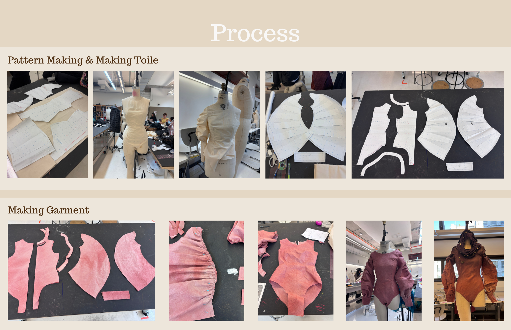

La Belle et le Bete
2025 Spring
During their junior spring semester, students of Parsons School of Art and Design were provided with three random materials from the fashion brand Tori Burch and given a mission to utilize them for their projects. Given three randomly selected items, Yejin Han incorporated the narrative of the fairy tale "Beauty and the Beast" with the process of finding the best way to utilize the items that was given to her to create a collection of five garments.


